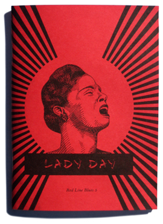

Available now in the online store.
Red Line Blues 5: Lady Day
Winter 2007
64 pages
4.5" x 6.25"
Edition of 300
Erich Nagler — From Her
Thomas Rain Crowe — Lady Day/Billie Holiday
Charlie Thomas — Billie Holiday in Prison
Glenis Redmond — Fettered Star
Steve Norris — Where Was Billie Holiday?
Adriana Fracchia — Layday
Candy Yanes — Stormy Weather
Simon Kress — Three Nocturnes for Lady Day
Jessie Grace Eller-Isaacs — Fran
Steve Godwin — Cafe Life
Gary Copeland Lilley — God Bless the Child
Christopher Cleveland — April in Paris
Laura Heston — Sings the Blues
Moriah Norris-Hale — I-85
Patricia Miles — Letter to Alys Hale
Maisha Najuma — What Feeds Me
Lindsay Ahl — Distingué Lover